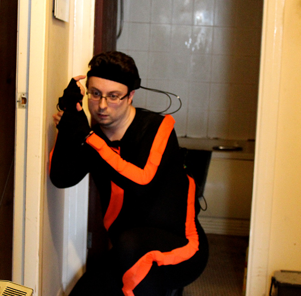
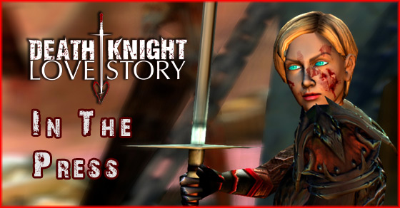
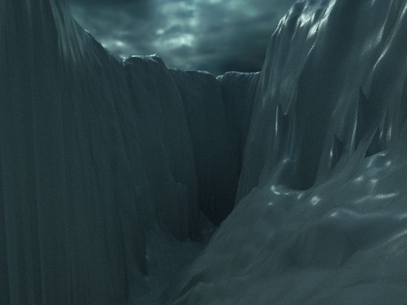
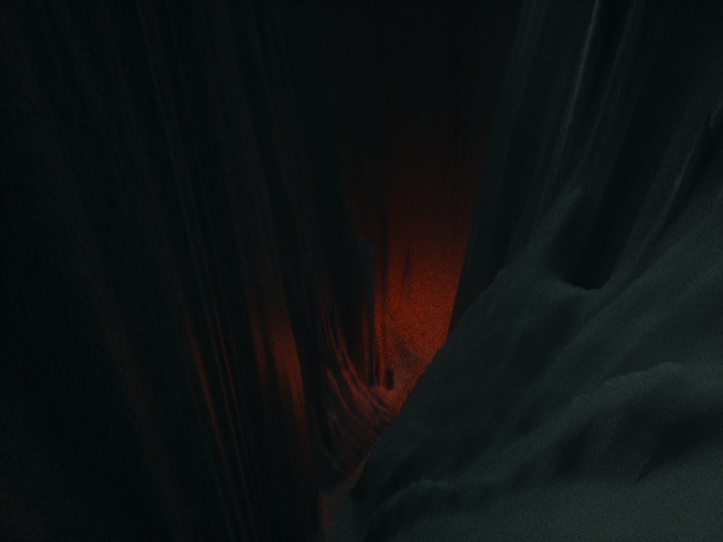
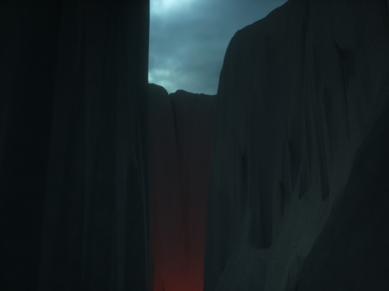

Latest News From Hugh
Late last year I was involved in doing the motion capture for a very cool, long-running Machinima project in Second Life - Time Travellers, produced by PookyMedia and directed by Russell Boyd.
Well, the episode in which all the mocap is featured is now online, and you can watch it here:
I was involved in producing the motion capture for the mocap-specific action sequence around 4:43, where the motions for both main characters were created by me in our MVN inertial mocap suits.
That involved learning quite a bit about the process of producing mocap for Second Life, about which I may write a blog post at some point!
Here’s a quick behind-the-scenes pic:

And if you’d like to watch the entire Time Travellers series from the start, here’s the first episode - enjoy!
Read more →
Just a short info post for everyone: after Blip.tv decided to delete a vast amount of their content without warning, my guerilla cookery show, Kamikaze Cookery, was one of the casualties.
However, I still had the masters, and after a surprising amount of faffing around (pro tip: don’t archive footage in video formats which may not exist in 5 years’ time), I’ve been able to re-upload it and make the entire series available again.
So, if you want to get your fix of Paul, Alex and I doing Sweary Science About Food, it’s once again possible. Enjoy!
Read more →

I’m very pleased to say that we’ve had loads of great press for Death Knight Love Story - whilst it’s still rolling in (I’m on the radio next week) here’s a quick summary of where DKLS has appeared so far:
Edinburgh director makes World of Warcraft movie - The Scotsman
Tech Weekly podcast: love and the digital world | The Guardian
Brian Blessed, World of Warcraft, And One Possible Future Of Movie Analytics - Forbes
Death Knight love story casts actors Brian Blessed, Joanna Lumley and more | WoW Insider
WoW Moviewatch: Death Knight Love Story
Hugh Hancock talks Death Knight Love Story and the future of Machinima | Geek Native
Tomb Raider Chronicles - TUM RAIDER DIRECTOR BACK WITH SHORT
Death Knight Love Story: torrentable Warcraft fan-movie starring Brian Blessed, Joanna Lumley & others - Boing Boing
I Have Touched the Sky: Death Knight Love Story
Szerelmes film | Frostshock!
Fanfilm: Death Knight Love Story - Mix aus Motion-Capture und Machinima – World of Warcraft
Un oeil sur Death Knight Love Story | Machineaste
We also had a great piece on Korean website inven.co.kr, but sadly I can’t find that one now!
And, of course, this isn’t counting all the guest posts that I did on DKLS!
Let me know if I’ve missed any appearances - I keep seeing mentions in our logs from sites I didn’t realise knew about us!
Read more →
Hey, everyone!
So, it’s been a pretty crazy few weeks, as Death Knight Love Story finally went live after years of development.
And you might have been surprised about how quiet it’s been here on Strange Company. But the reason is that I’ve been running around frantically blogging about DKLS all over the Web!
So, here’s a quick round-up of all the posts I’ve made about DKLS, from the way we made the music to the reasons for making films in a virtual world at all…
I’m Hugh Hancock. I came up with the word “Machinima”, founded Machinima.com, and just released a Machinima movie starring Brian Blessed and Joanna Lumley. AMA! : IAmA at Reddit.com
How I Cast Brian Blessed, Joanna Lumley and Jack Davenport in my fantasy short, Guest Blog by Hugh Hancock | Make Film Teach Film
Minecraft, The Sims, And The Future Of Filmmaking - Charlie’s Diary
How I Stopped Worrying And Learned To Love Focus Groups - Charlie’s Diary
A Virtual Filmmaking Primer - Charlie’s Diary
Why Make A Movie Within A Computer Game? - Charlie’s Diary
Introducing … Death Knight Love Story, evolution of Machinima - Charlie’s Diary
How To Survive A Death March - Charlie’s Diary
Tobold’s Blog: Guest Post: How do MMOs reach $200m budgets?
The Music of Death Knight Lovestory (A Guest Post by Hugh Hancock) - MMO Gypsy – Wandering online Worlds
How to take Awesome Screenshots, Part 1: Through the Lens – orcish army knife
Historical European Martial Arts And Sword-Fighting in Death Knight Love Story (DKLS Site)
Motion Capture In Death Knight Love Story Movie (DKLS Site)
Taking Naxxramas and More From WoW to Movie: Death Knight Love Story (DKLS Site)
How We Used Machinima Techniques in WoW to make DKLS (DKLS Site)
Read more →
Death Knight Love Story Pt 1 - Jack Davenport, Anna Chancellor, Joanna Lumley, Brian Blessed from Strange Company on Vimeo.
Machinima.com founder releases motion-captured Warcraft fan-film with Hollywood stars Jack Davenport, Anna Chancellor, Joanna Lumley and Brian Blessed
Voiced by Hollywood stars (Jack Davenport, Anna Chancellor, Joanna Lumley and Brian Blessed), made using full Hollywood-grade motion capture and scored by BAFTA nominee Ross Campbell, Death Knight Love Story is a World of Warcraft-based Machinima fanfilm like no other.
It was written and directed by Hugh Hancock, director of “BloodSpell” and founder of Machinima.com.
Death Knight Love Story (DKLS) is a tale of passion forged in the darkest, most dreadful place possible. It’s a tale of two people born with a searing flame who find each other, lose each other, and end up facing each other in battle, still desperately in love.
Based in Azeroth, the setting of World of Warcraft, DKLS tells the tale of a Death Knight, Miria, the redeemed servant of the Lich King, and Sir Zelieck, first of the Horsemen of Naxxaramas.
It tells how Miria went from being at the Lich King’s right hand to battling to save the North from his armies, and how Sir Zelieck fought the Lich King to his last breath, defied him even in death - and yet still ended up his servant, ruling his floating city of the damned.
Death Knight Love Story was made on a completely non-profit basis as a labour of love. It is arguably the biggest single non-profit Machinima project ever.
Speaking about the project, Brian Blessed said “I feel one mustn’t be afraid of new technology, and people condemn it all the time … I’m all for the new techniques that are being developed … I ultimately feel that all the Avatar techniques and all these wonderful new techniques that are coming through will actually bring a new reality, and the actor will be needed much more. Virtually it’s going to be so brilliant that they’re in your sitting room.”
Death Knight Love Story part 1 is available for free download (including Bittorrent) from
http://www.deathknightlovestory.com/
Read more →
Big things are coming! Coming before the end of this month, in fact: watch this space.
And it’s not just Strange Company that has exciting news: here’s a quick round-up of the other things that have caught my eye over the last month or so.
Virtual Bipeds Teach Themselves To Walk. This video has done the rounds of the Internet mostly on the grounds that there’s a lot of amusing falling over in it, but the technology’s actually quite remarkable. I’ll be talking more about this soon, as I start to get into considering what’s next for Machinima after the motion capture revolution:
Flexible Muscle-Based Locomotion for Bipedal Creatures from John Goatstream on Vimeo.
Blitz.io: for finding out if your website can hack it. If you’ve launched anything on the Internet that has been moderately successful, the chances are you’ve experienced the “oh god, the servers can’t handle it” moment. I’ve spent more time than I care to think about on launch days screaming at unresponsive websites. As a result, I love this service that lets you easily simulate a massive - and I mean MASSIVE - rush of traffic to your site, so you can make sure nothing will go wrong before that New York Times article goes live.
http://www.blitz.io
Virtual Reality Is Getting Awesome Faster Than Expected. Someone’s claiming that Valve Software’s new VR tech demo is incredible. They’re saying it’s like “lucid dreaming”, and “like a holodeck”. Overblown hype, right? Well, probably not - given the person saying it is their direct competitor, Palmer Luckey, the inventor of the Oculus Rift, who says that Valve’s experience is “like playing an XBOX compared to the Oculus’s “8bit Nintendo”“.
Yeah, VR is only going to get more interesting over the next couple of years.
Here’s the press piece
Finally, on the subject of interesting things: I’m dragging Strange Company kicking and screaming into the early 2000s as far as letting people know what we’re up to! Yes, as you’ll see below, you can drop me a line with your email address, and I’ll keep you updated with the latest big news from SC. Emails won’t come more than once every few weeks, and they’re likely to include stuff I’m not sharing anywhere else - I’ll be asking for feedback, sharing bits and pieces from behind the scenes, and talking about things that might not be ready for full-blown public disclosure yet. If that sounds interesting, drop your email address in below!
Read more →
I was recently interviewed by Mindblind Setsuko for We H@ck The Cinema! , talking about topics ranging from the future of filmmaking to the Oculus Rift and more.
Normally I’d just link the interview - and indeed, here it is - but since it’s in Italian, Mindblind have very graciously allowed me to post an English translation here.
Enjoy!
Recently you have updated your “Strange Company” website, a pioneer studio of machinima production. Could you tell me about its mission and its changing during the years?
I started Strange Company in 1997 to take advantage of this exciting new medium - which wasn’t even called Machinima then - and since that time, its mission has been basically the same!
I’ve always been looking to the latest technology in real-time 3D animation. Originally, it was Quake, the first true 3D game with human characters, and the birthplace of Machinima.
Over the years, we’ve moved from games to custom-built software to using game assets but not the renderer, and now I’m moving to using an innovative combination of non-game technology with game techniques.
We’ve moved from “recammed” demo files to scripting to motion capture.
And we’ve moved from incredibly primitive graphics to something close to the state of the art.
It’s been really exciting! And currently it’s getting even more exciting, with all sorts of technological possibilities opening up.
Motion capture is obviously going to get bigger and bigger. The Kinect 2 is looking very promising for delivering higher-quality motion capture, and there are more and more low(ish) cost mocap solutions becoming available.
I’m very excited by the potential of modern-day rendering techniques, too. Things like Physically-Based Rendering (coming in the new Cryengine), good Global Illumination to make lighting much more realistic, and possibly even full realtime raytracing are nearly here.
And VR is going to change everything. We just don’t know how yet.
Despite of several negative reviews from media studies, from your point of view Machinima is still able to become professionally relevant for the industry of visual content development?
I think people get confused about what Machinima really is.
It’s inextricably linked with amateurish game movies these days - but the techniques of Machinima creation, particularly when coupled with motion capture, are all over the wider media world right now.
“Avatar” and “Tintin” are incredibly close to being Machinima in how they’re created - it’s only the final level of polish and the ultra-high rendering quality that’s differentiating them.
And CG studios are experimenting with realtime or almost realtime solutions more and more. I know of at least one company using Maya’s realtime Viewport 2.0 to render commercials, for example.
If people are discounting higher-end Machinima-like techniques, it’s largely because they’re so good they’re becoming indistinguishable from mainstream animation.
Heh, well, as you may know, I’ve got two of the first-generation Oculus Rift VR headsets here in the studio, so I’m very interested in this stuff!
I think there’s an entire new artform waiting to be discovered in VR, actually. Clearly it’s possible to tell a linear narrative story within the world of VR - but we’ll have to relearn everything about visual storytelling to do it.
You can no longer force the viewer’s gaze in VR: instead, you’ve got to tell a story “in the round”. And it may be that you can’t even force motion thanks to “VR sickness” - or that you have to find specific ways to do it.
I’m really excited about exploring the possibilities! Look for Strange Company’s first VR film soon…
Thank you very much for sharing your opinions.
Read more →
Just a quick mention: NPR ran a piece on Machinima recently, mostly looking at the company rather than the artform.
It’s a short piece, but interesting, and I’m interviewed briefly near the start.
Have a listen:
A YouTube Powerhouse Looks Beyond Its Gamer Base
Read more →
OK, I’m more than a little nervous about doing this, given that “showing your unfinished work” is pretty darn high on the Filmmaker’s List Of Things Not To Do, but what the hell. Let’s channel my inner Linus and release early, release often!
Here’s a Work-In-Progress preview of the first sequence from my newest project, using my Shiny New Pipeline.
The film’s called “The Hateful Cliffs”, and will be a serious effort at channeling my inner mid-70s Michael Moorcock - proper Weird Fantasy of the kind Hollywood just can’t do because it’s too risky.
But this first shot’s comparatively tame: just a great way to show off how the pipeline is developing in a much more complex sequence than the last one I showed off.
Let me know what you think, and what you think still needs to improve!
Read more →
Now that I’ve got the basics down for my new pipeline, it’s time to test it with an Actual Film.
And so, on Friday I began work on a Michael Moorcock-style pulp wierd fantasy pilot.
Initially things have gone a little slowly due to hitting a couple of texturing bugs, but still, some nice images are starting to come out of the process:



What do you think? Let me know!
Read more →
{kind=link}
{kind=link}
{kind=link}
{kind=link}
{kind=link}